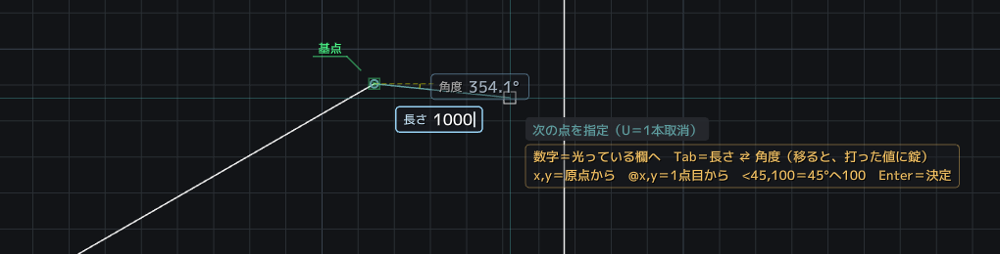
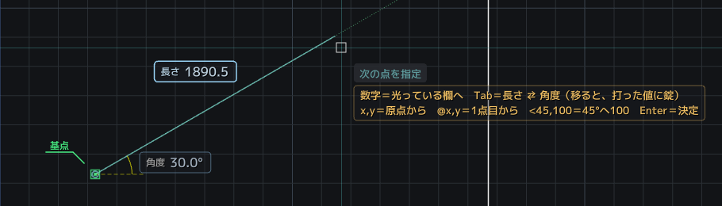
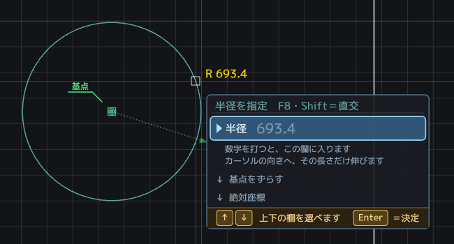
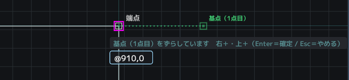

4. Typing numbers (coordinates and distances)
Two places to type
- The Command Line (at the bottom, name plate 小窓：CommandLine) = where words and numbers are received.
- The field beside the cursor = where distances are received (when dynamic distance input is on).
Enter accepts, in both.
Absolute and relative coordinates
- 1000,500 = absolute. The point 1000 right and 500 up from the origin (0,0).
- @100,50 = relative. 100 right and 50 up from the previous point.
Right is +, up is + (the same directions as the X and Y arrows standing at the origin).
The comma is a half-width comma.
Distance input (beside the cursor)

Once you have picked a base point, aim the cursor the way you want to go and type a number → Enter = it travels that distance in that direction.
The cursor gives the direction, the number gives the length. They divide the work between them.
For a rectangle (REC) you can also give 700,700 — that is width,height.
Line and Polyline: two fields beside the line

After the first point, [Length] appears on the line and [Angle] beside the arc at the corner.
The lit field (blue frame) is where you type. Tab moves between length ⇄ angle.
Moving with Tab locks the value you typed (amber padlock). Example: 2000 → Tab → 30 → Enter = a line 2000 long at 30°. Example: type 30 in the angle and press Tab = along the 30° path, set only the length with the mouse.
Angles: 0° = right, counter-clockwise (90° = up). Esc releases the lock.
The shape of what you type also decides it (either field works the same): · 1000,500 = coordinates from the origin (absolute) · @500,0 = 500 to the right of the first point (relative) · <45,100 = 100 in the 45° direction from the first point (angle first, length after)
The first point of a line can be placed offset from a snap point
While Line or Polyline is waiting for the first point, rest the cursor on a snap point (endpoint, intersection…) for 0.5 seconds: a green ring fills up, and that point becomes the "base point".
Then type @1000,0 and press Enter = the first point is 1000 to the right of the base point.
Type <45,100 and the first point is 100 in the 45° direction from the base point.
Type 1000,500 and the first point is at those coordinates from the origin.
Rest on the same point once more, or press Esc, to release the base point.
When you want the first point at absolute coordinates (circle, rectangle…)
Type the first point into the Command Line below (for example 0,0 = the origin of the drawing).
If you type a number while the first point is awaited, the Command Line lights up by itself and takes the number. Just carry on and press Enter.
* Line and Polyline take it directly in the field beside the cursor (see the section above).
Circle, Rectangle and Polygon have three fields (choose with ↑↓)

From the top: length / shift the base point / absolute coordinate.
↑↓ move between the rows, and Tab cycles through them as well. Enter accepts.
The third row, absolute coordinate, takes the coordinate measured from the drawing origin (0,0) exactly as it is (0,0 or 1000,500, say). The base point is not used.
It is also useful when you want to confirm where the origin actually was.
Shifting the base point itself (@)

While a point is awaited, type @ and a green square stands on the point you have caught; type something like @910,0 and the base point itself moves.
Enter accepts, Esc cancels.
This is the hand for “I want to start drawing 910 to the right of the corner of that column”.
You can do the arithmetic as you type (the calculator)
Anywhere you can type a number, you can type an expression instead. · 3640-910 = 2730 (what is left of the wall) · 455*4 = 1820 (setting out a 455 module) · (1820+910)/2 = 1365 (the middle)
You may use + − × ÷ and brackets. Full-width characters are accepted too.
The radius of a circle, for instance. C → click the centre → 3640/2 → Enter draws a circle of radius 1820. The distance beside the cursor works the same way.
No more opening a calculator, memorising the answer, coming back and typing it again.
Type an expression on its own into the Command Line and it simply returns the answer (as a calculator).
The 電卓 (Calculator) button next to the Command Line's name plate also explains how to use it.
※ You cannot divide by zero. Give the number alone, without a unit (4000, not 4000mm).
Another face of the Command Line
The radius of a circle can also be typed as 4000, R2000 or D8000 (diameter).
The destination of a move or a copy can be typed as @1000,0 as well.
Correct the manual there and this one is corrected the same day.
The pictures show the Windows version (retaken in November 2026). On the Mac version, Ctrl is ⌘ and Alt is ⌥.